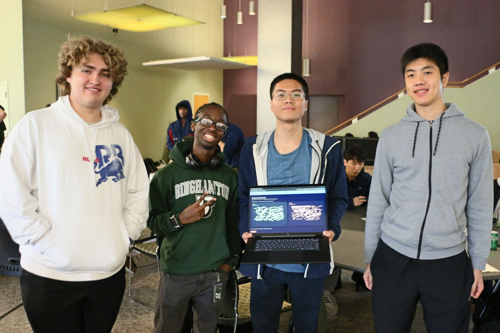

Conferences
Events & learning
Here are some of the conferences and events I've attended.
YHack | Yale University
I attended YHacks to build a project with a team of students. I also had the opportunity to network with other students and professionals.

SBUHacks | Stony Brook University
I attended SBUHacks to learn more about the hackathon process and to network with other students. I also had the opportunity to work on a project with a team of students.